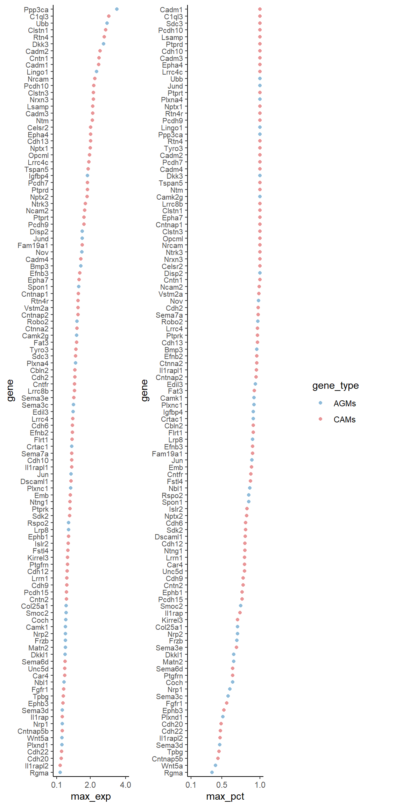
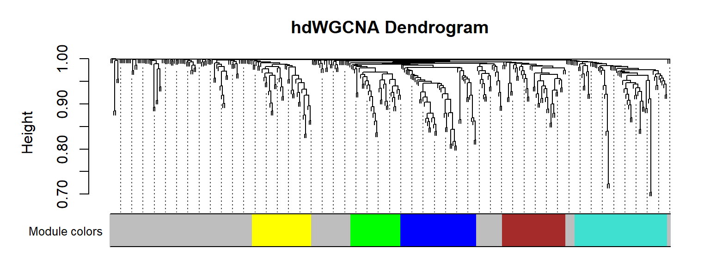
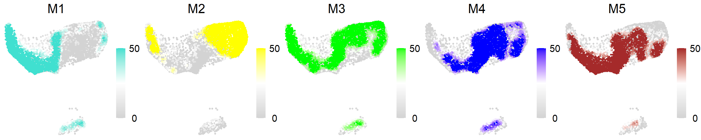
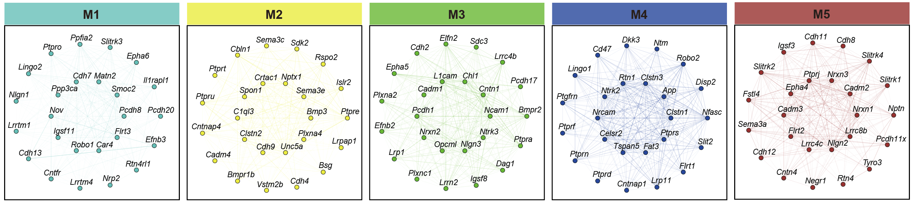

Code
library(Seurat)
library(tidyverse)
library(hdWGCNA)
library(cowplot)
library(patchwork)
library(enrichR)
library(GeneOverlap)
library(ggpointdensity)
library(Biorplot)
source('bin/Palettes.R')
source('bin/includes.R')library(Seurat)
library(tidyverse)
library(hdWGCNA)
library(cowplot)
library(patchwork)
library(enrichR)
library(GeneOverlap)
library(ggpointdensity)
library(Biorplot)
source('bin/Palettes.R')
source('bin/includes.R')Adult.Ex <- readRDS('../data/rds/Adult.Ex.rds')
sp.PFC <- readRDS('../data/rds/sp.PFC.rds')Adult.IT.PT.barcode <- subset(Adult.Ex, cells=colnames(Adult.Ex)[which(
(Adult.Ex$BC_num>0 & Adult.Ex$Ex_subtype == "IT") |
(Adult.Ex$BC_num>0 & Adult.Ex$Ex_subtype == "PT" & Adult.Ex$sample == "Adult1")
)])gene_lib <- read.csv('../data/csv/transmitter_and_receptor/gene_lib.csv')
AG <- unique(str_to_title(gene_lib$Axon_Guidance))
CAM <- unique(str_to_title(gene_lib$CAM))
all_gene <- unique(c(AG, CAM))
# filter
seu <- Adult.IT.PT.barcode
all_gene <- all_gene[which(all_gene %in% rownames(seu))]
# gene expression filter
all_gene_exp <- AverageExpression(
seu, features=all_gene, assays="RNA", slot="data", group.by="Proj_subtype"
)$RNA
all_gene_exp <- as.data.frame(log1p(all_gene_exp))
all_gene_exp$max <- apply(all_gene_exp, 1, max)
# gene cell percentage filter
all_gene_pct <- as.data.frame(t(as.matrix(seu@assays$RNA@data[all_gene,])))
all_gene_pct$Proj_subtype <- as.character(seu$Proj_subtype)
all_gene_pct <-
all_gene_pct |>
dplyr::group_by(Proj_subtype) |>
dplyr::summarize(across(1:length(all_gene), function(x){
length(which(x>0))/length(x)
})) |>
as.data.frame()
rownames(all_gene_pct) <- all_gene_pct$Proj_cluster
all_gene_pct <- as.data.frame(t(all_gene_pct[,-1]))
colnames(all_gene_pct) <- 1:33
all_gene_pct$max <- apply(all_gene_pct, 1, max)
all_gene <- all_gene[which(all_gene_exp$max>0.1 & all_gene_pct$max>0.1)]
AG <- AG[which(AG %in% all_gene)]
CAM <- CAM[which(CAM %in% all_gene)]
AG <- AG[which(!(AG %in% CAM))]# gene_order
PTi_gene <- c(
"Sema3e","Sema3c","Spon1","Sdk2","Cntfr","Cntn1","Ntng1","Cdh6","Emb","Cdh20",
"Ctnna2","Flrt1","Fam19a1","Rgma","Igfbp4","Ephb1","Disp2","Celsr2","Sema6d",
"Tpbg","Dscaml1","Kirrel3","Wnt5a","Fgfr1","Cntnap5b","Cntnap2","Cdh22","Nrp1",
"Nrxn3","Ntrk3","Nrcam","Opcml","Clstn3","Cntn2","Cntnap1","Ephb3","Lrrn1","Epha7"
)
ITi_D_gene <- c(
"Robo2","Clstn1","Lrrc8b","Camk2g","Ntm","Tspan5","Dkk3","Cadm4","Pcdh7","Sema7a",
"Cadm2","Cbln2","Frzb","Tyro3","Rtn4","Ppp3ca","Cdh12","Fstl4","Nptx2","Lingo1",
"Pcdh9","Unc5d","Il1rap","Rtn4r","Nptx1","Plxna4","Cdh9","Bmp3","Crtac1","Nrp2",
"Ptprt","Jund","Ubb","Camk1","Lrrc4c","Pcdh15","Matn2","Il1rapl1"
)
ITi_V_gene <- c(
"Edil3","Epha4","Cadm3","Col25a1","Ptprk","Islr2","Lrp8","Il1rapl2","Cdh10","Nbl1",
"Lrrc4","Ptprd","Coch","Plxnd1","Ptgfrn","Dkkl1","Fat3","Vstm2a","Efnb2","Cdh2",
"Ncam2","Lsamp","Pcdh10","Sema3d","Rspo2","Jun","Smoc2","Car4","Sdc3","C1ql3",
"Plxnc1","Cdh13","Efnb3","Nov","Cadm1"
)
gene_order <- c(PTi_gene,ITi_D_gene,ITi_V_gene)df <- data.frame(
"gene" = gene_order,
"max_exp" = as.numeric(all_gene_exp$max[match(gene_order, rownames(all_gene_exp))]),
"max_pct" = as.numeric(all_gene_pct$max[match(gene_order, rownames(all_gene_exp))])
)
df$gene_type <- ""
df$gene_type[which(df$gene %in% AG)] <- "AGMs"
df$gene_type[which(df$gene %in% CAM)] <- "CAMs"
df$gene <- factor(df$gene, levels = df$gene[order(df$max_exp)])
P1 <-
ggplot(df, aes(x=max_exp, y=gene, color=gene_type)) +
geom_point() +
scale_color_manual(values = c("AGMs"="#8ebbda","CAMs"="#e99496")) +
scale_x_continuous(breaks = c(0.1,2,4), limits = c(0.1,4)) +
theme_classic() +
theme(axis.text.y = element_text(size = 8))
df$gene <- factor(df$gene, levels = df$gene[order(df$max_pct)])
P2 <-
ggplot(df, aes(x=max_pct, y=gene, color=gene_type)) +
geom_point() +
scale_color_manual(values = c("AGMs"="#8ebbda","CAMs"="#e99496")) +
scale_x_continuous(breaks = c(0.1,0.5,1), limits = c(0.1,1)) +
theme_classic() +
theme(axis.text.y = element_text(size = 8))
legend <- get_legend(P1)
FigureS9_A <-
plot_grid(P1 + theme(legend.position="none"),
P2 + theme(legend.position="none"),
legend, nrow = 1)
FigureS9_A
ggsave("../pdf/FigureS9/FigureS9_A.pdf", plot = FigureS9_A,
height = 12, width = 6, units = "in")load("../data/csv/CAMs_AGMs/CAMs_AGMs.hdwgcna.RData")PlotDendrogram(seu.hdwgcna.AGMs_CAMs, main='hdWGCNA Dendrogram')
df <- as.data.frame(seu.hdwgcna.AGMs_CAMs@reductions$umap@cell.embeddings)
df$M1 <- seu.hdwgcna.AGMs_CAMs@misc$AGMs_CAMs$MEs$M1
df$M2 <- seu.hdwgcna.AGMs_CAMs@misc$AGMs_CAMs$MEs$M2
df$M3 <- seu.hdwgcna.AGMs_CAMs@misc$AGMs_CAMs$MEs$M3
df$M4 <- seu.hdwgcna.AGMs_CAMs@misc$AGMs_CAMs$MEs$M4
df$M5 <- seu.hdwgcna.AGMs_CAMs@misc$AGMs_CAMs$MEs$M5
#df <- df[which(seu$Ex_subtype=="IT"),]
df <- df[df$UMAP_1 < 1.2 & df$UMAP_1 > -13,]module <- c("M1","M2","M3","M4","M5")
col <- c("turquoise","yellow","green","blue","brown")
plist <- list()
for (i in 1:5){
plist[[i]] <-
ggplot() +
geom_point(df, mapping = aes(x = UMAP_1, y = UMAP_2), color="lightgray", size=1) +
geom_pointdensity(df[which(df[,module[i]]>0),], mapping = aes(x = UMAP_1, y = UMAP_2), size=1) +
scale_color_gradientn(colours = c("lightgray","white",col[i]),
na.value = col[i], limits = c(0,50), breaks = c(0,50)) +
coord_fixed() +
theme_void() +
labs(title = module[i], x="", y="", colour = "") +
theme(plot.title = element_text(hjust = 0.5, size = 20),
legend.text = element_text(hjust = 0.5, size = 15),
legend.position = "right",
legend.key.width = unit(1, "lines"),
legend.key.height = unit(1.5, "lines"))
}
FigureS9_C <- plot_grid(plotlist = plist, ncol=5)
FigureS9_C
ggsave("../pdf/FigureS9/FigureS9_C.pdf", plot = FigureS9_C,
height = 3, width = 15, units = "in")ModuleNetworkPlot(
seu.hdwgcna.AGMs_CAMs,
outdir = '../pdf/FigureS9/ModuleNetworks'
)knitr::include_graphics("images/FigureS9_D.png", dpi = 300)